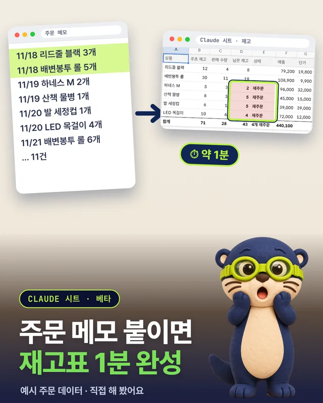
도구·MCP클로드 시트·화이트보드 시작 가이드
Claude(claude.ai)에 새로 생긴 시트·화이트보드 사용법입니다. 주문 메모를 붙여 넣어 수식이 든 재고표 만들기, 그대로 쓰는 요청문, 구글 시트·엑셀로 내보내기, 아이디어를 묶어 주는 화이트보드까지 예시 데이터로 직접 해 본 결과와 엑셀 주의점을 정리했습니다.
도구·MCPClaude 스킬 만들기 시작 가이드
Claude와 한 번 해 본 일을 «방금 한 걸 스킬로 만들어 줘» 한마디로 다시 쓰는 명령어(스킬)로 저장하는 법입니다. skill-creator 켜는 곳, 4단계 사용법, 판매자 업무 예시, 연습용 캔들 가게로 직접 해 본 결과를 캡처와 함께 정리했습니다.
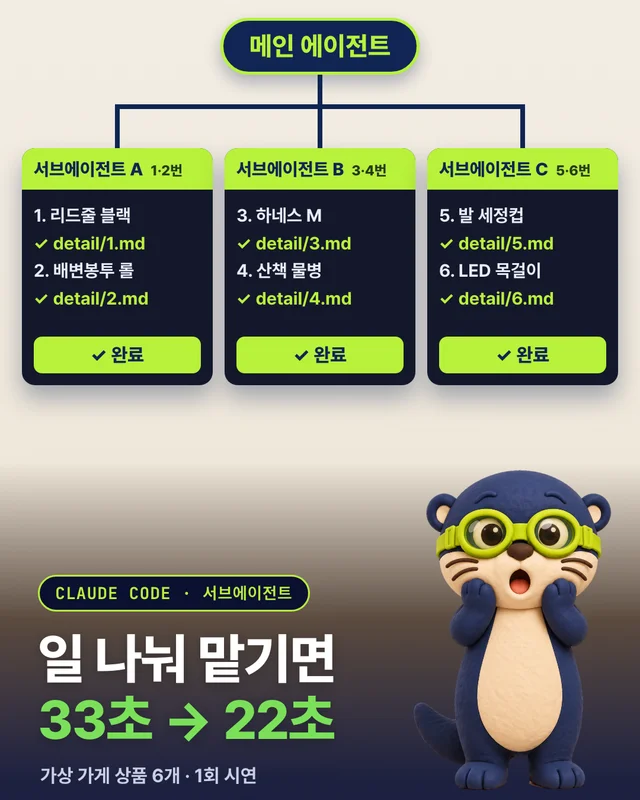
도구·MCP클로드 코드 일 나눠 맡기기 시작 가이드
클로드 코드에서 큰 일을 서브에이전트 여럿에게 나눠 맡기는 법입니다. 요청문 그대로 복사해 쓰는 예시, 판매자 업무 예시, 가상 가게 상품 6개로 혼자 vs 나눠서 직접 비교한 결과(시간·비용·지어낸 말 대조)를 정리했습니다.
도구·MCPSeedream 5.5 시작 가이드 — 상품 사진을 네 번 고쳐도 안 뭉개지는 이미지 AI
바이트댄스의 이미지 AI Seedream 5.5를 Dreamina에서 무료로 써 보는 법과 힉스필드에서 쓰는 법, 캔들 사진 한 장을 네 번 이어서 고치고 투명 배경 PNG까지 만든 시연 결과를 정리했습니다.
도구·MCP셀러용 클로드 스킬 시작 가이드 — 메모 몇 줄로 상세페이지 문구 초안
온라인 쇼핑몰 운영에 쓰는 무료 오픈소스 클로드 스킬 7개와 설치 방법, 가상 간식 가게 메모로 상세페이지 문구를 뽑아 본 결과, 올리기 전에 꼭 확인할 다섯 가지를 정리했습니다.
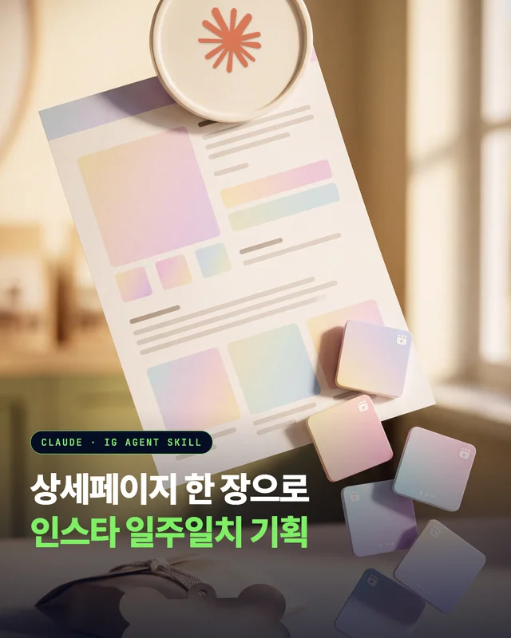
도구·MCP인스타 에이전트 스킬 시작 가이드 — 상세페이지 하나로 인스타 일주일치 기획
인스타 운영에 쓰는 오픈소스 클로드 스킬 13개의 설치 방법과, 가상 쇼핑몰 상세페이지 한 장으로 요일별 게시 계획과 릴·캐러셀 배치를 뽑아 본 결과, AI가 쓴 숫자를 확인해야 하는 이유까지 정리했습니다.
도구·MCPClaude 브랜드 스타일 시작 가이드 — 말 한 문장으로 모든 보고서에 우리 브랜드 색 입히기
Anthropic 공식 클로드 플러그인 small-business의 brand-style 기능으로, 색상 코드 없이 말 한 문장으로 브랜드 색을 정하고 미리보기에서 고치는 과정을 가상 가게로 직접 해 본 결과와 함께 단계별로 정리했습니다.
도구·MCPClaude 소상공인 플러그인 시작 가이드 — 새는 매출 막는 스킬 4가지
Anthropic이 만든 공식 클로드 플러그인 small-business의 설치 방법과, 연동 없이 엑셀·붙여넣기만으로 쓰는 재고·단골·리뷰·고객 답장 스킬 4가지를 가상 데이터로 직접 돌려 본 결과와 함께 정리했습니다.
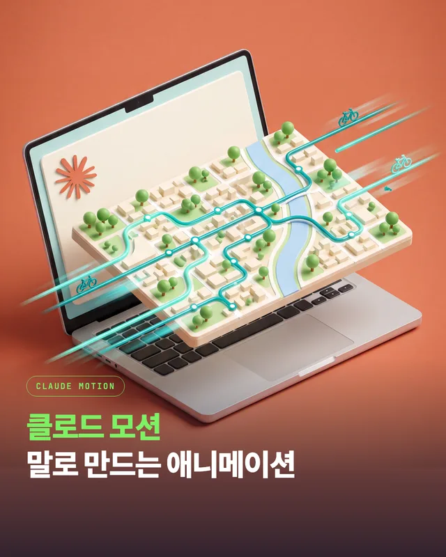
도구·MCP클로드 모션 사용법 — 말로 만드는 애니메이션
원하는 장면을 말로 설명하면 클로드가 글자·차트·도형이 움직이는 애니메이션을 만들어 MP4로 내보내 주는 기능입니다. 여는 법 3가지, 요청→댓글 수정→내보내기→공유 4단계, 셀러용 복붙 프롬프트, 쓸 수 있는 플랜(11/8 요금표 기준)을 공식 자료로 정리했습니다.
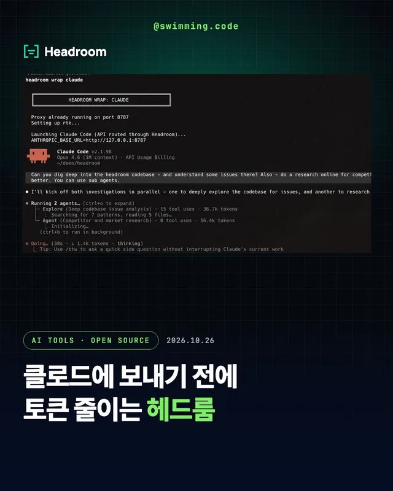
도구·MCPHeadroom 설치 가이드 — 클로드에 보내기 전에 로그·JSON을 내 컴퓨터에서 줄이는 오픈소스 프록시
클로드 코드가 읽은 도구 출력·로그·JSON을 서버로 보내기 전에 내 컴퓨터에서 줄여 주는 오픈소스 프록시입니다. 설치·켜기·절감량 확인·제거와, 효과가 큰 입력과 거의 없는 입력을 공식 문서와 직접 잰 값으로 정리했습니다.
도구·MCP클로드 대시보드 사용법 — 주문 엑셀 하나로 매출 대시보드 만들기
데이터를 연결해 두고 평소 말투로 물으면 클로드가 숫자·표·그래프가 있는 화면을 만들어 주는 기능입니다. 주문 엑셀과 구글 시트로 채널별 매출 대시보드를 직접 만들어 본 과정을 정리했습니다.
도구·MCP오픈아트 디렉터 모드 — 한 문장으로 시작해 채팅으로 고치는 법
문장 하나를 적으면 대본과 장면 구성부터 만들어 주고, 그 뒤엔 채팅으로 말하는 대로 고쳐 가며 최대 5분 영상을 완성하는 기능입니다. 시작하는 법과 채팅으로 고치는 법을 오픈아트 공식 자료로 정리했습니다.
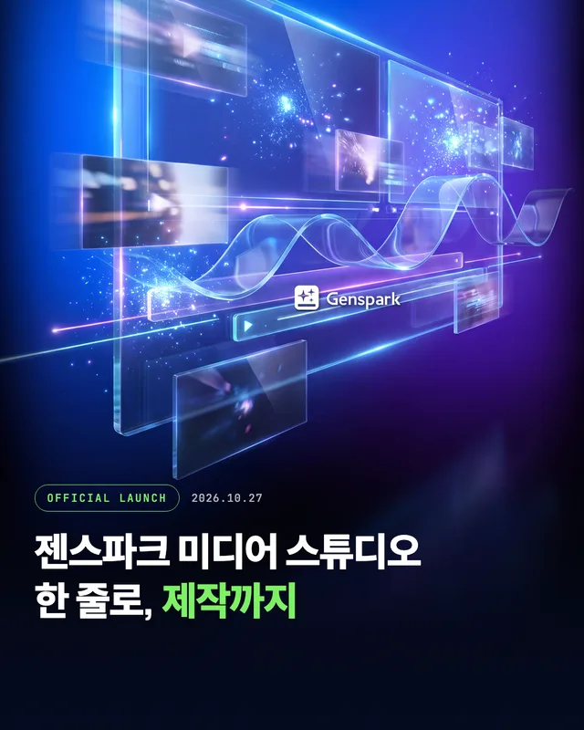
도구·MCPGenspark Media Studio 시작 가이드 — 제품컷 한 장으로 연출컷까지 이어 만들기
글로 요청하면 에이전트가 기획·스토리보드부터 맞추고 이미지·영상·3D 제작까지 한 화면에서 잇는 젠스파크 미디어 스튜디오. 무료 계정으로 제품컷을 만들고 참조 선택으로 같은 제품이 나오는 연출컷까지 이어 만든 순서를 정리했습니다.
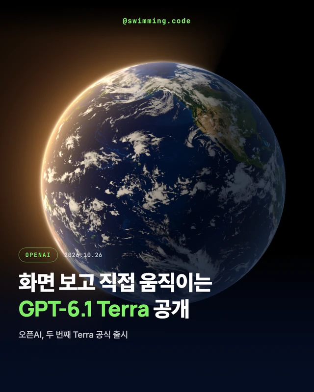
트렌드GPT-6.1 Terra 출시 정리 — 오픈AI의 두 번째 컴퓨터 사용 모델
화면을 직접 클릭·입력하는 컴퓨터 사용 모델입니다. 트램 사진 한 장으로 3D 모델링부터 실물 장난감 제작까지 이어지는 공식 데모 과정을 그대로 담았습니다.
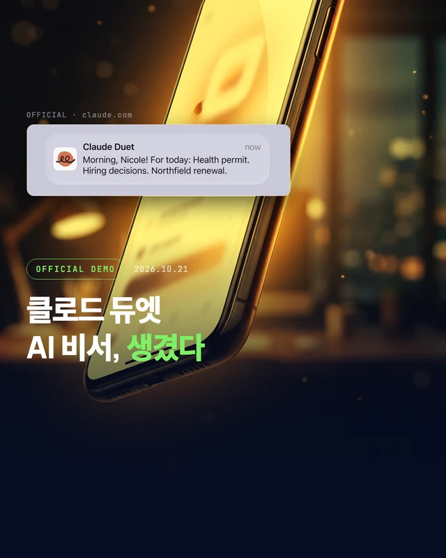
트렌드클로드 듀엣 — 승인 없인 결제도 서명도 못 하는 AI 에이전트
매일 아침 할 일을 먼저 정리해 보여주고 지시만 내리면 백그라운드에서 처리하는 앤트로픽의 능동형 에이전트입니다. 결제·서명처럼 민감한 행동엔 승인해도 매번 다시 확인받는 구조까지 공식 발표문 그대로 담았습니다.
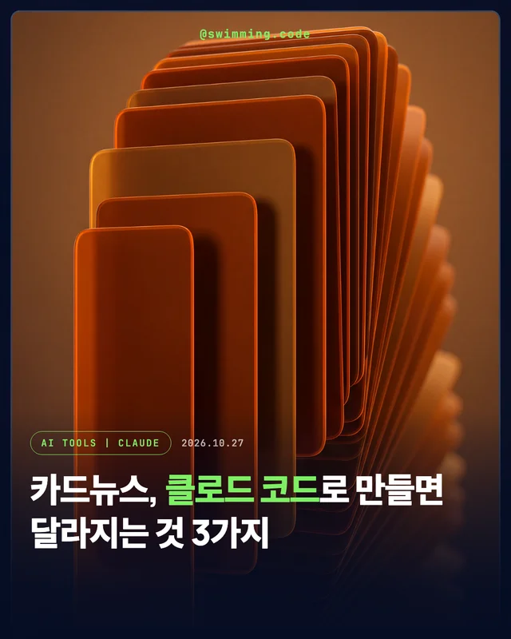
도구·MCP클로드 코드로 카드뉴스 만드는 법 가이드 — HTML/CSS로 직접 만드는 방법
카드뉴스를 AI 이미지로 생성하지 않고 Claude Code에게 HTML/CSS 코드로 요청해서 만드는 방법. 좌표를 숫자로 고정해 틀을 재사용하는 원리와, 실제로 돌려본 1차 결과물의 오차·수정 과정까지 그대로 담았습니다.
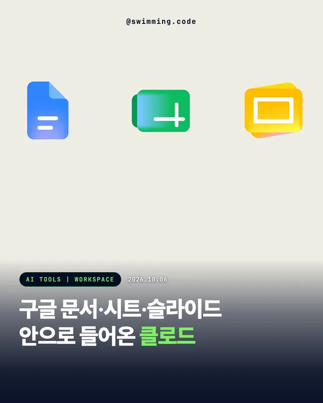
도구·MCPClaude for Google Workspace 시작 가이드 — 구글 문서·시트·슬라이드 옆에서 클로드 쓰기
구글 문서·시트·슬라이드 파일 옆 사이드바에 클로드를 붙이는 애드온입니다. 설치부터 앱별 요청 예시, 수정 전 승인 방식까지 앤트로픽 공식 발표·헬프센터·공식 영상 기준으로 정리했습니다.
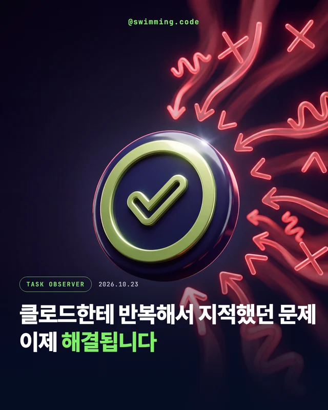
도구·MCPTask Observer 설치 가이드 — Claude 세션에서 반복 지적한 걸 스킬 교정 제안으로 쌓아주는 메타 스킬
다른 스킬이 실제로 쓰이는 걸 지켜보다가, 사람이 고치는 패턴을 발견하면 개선안을 쌓아줍니다. 전부 '제안'이라 사람이 승인해야 반영되고, 직접 설치해 작동까지 확인했습니다.
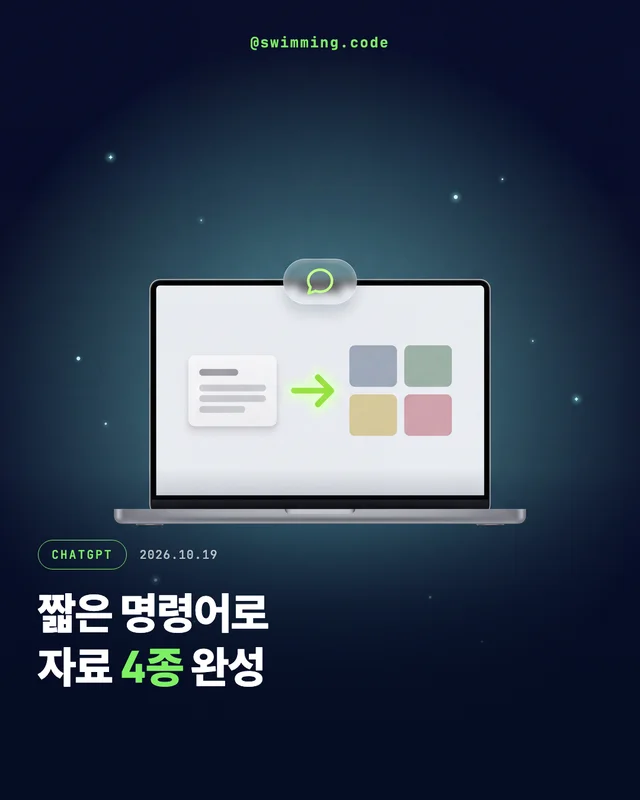
프롬프트캡처 한 장으로 만드는 챗GPT 자료 4종
업무 화면 캡처 한 장에 짧은 명령어만 바꿔 넣으면 만화·인포그래픽·할 일 보드·발표 자료로 바뀝니다. 공식 기능은 아니지만 Free 플랜에서 직접 실행해 확인했습니다.
도구·MCPHiggsfield Katana 시작 가이드 — 클로드 채팅 안에서 참고 편집과 사진으로 영상 다시 만들기
참고 편집과 사진 최대 5장을 주면 그 샷 순서·컷 위치대로 내 소재로 영상을 다시 만들어 주는 클로드용 스킬입니다. 필요한 커넥터와 구독 조건까지 공식 블로그 기준으로 정리했습니다.
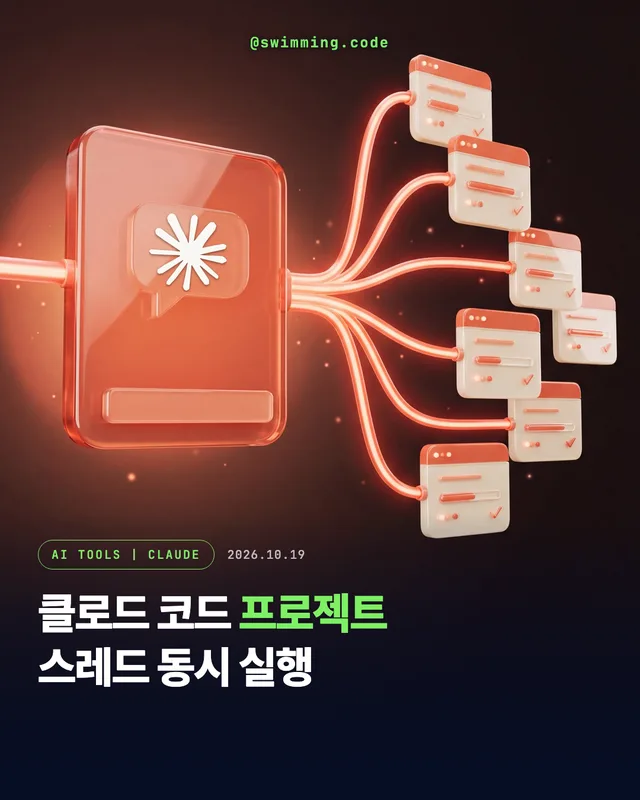
도구·MCPClaude Code Projects 시작 가이드 — 할 일을 한 대화창에 보내면 작업별로 동시에 처리
대화창 하나에 할 일을 보내면 작업마다 스레드를 만들어 병렬로 실행하고, 끝난 일·검토할 일만 한 화면에 모아 보여줍니다. Pro·Max 공개 베타 기준 공식 문서로 정리했습니다.
도구·MCP구글 Foresight — 맥용 AI 회의록 앱 설치·사용 가이드
회의 중 적어 둔 짧은 메모를 녹취 내용으로 채워 노트로 만들어 주는 구글 AI Edge의 맥용 앱입니다. 설치부터 자료 연결, 데이터 처리 위치 설명까지 공식 원문과 함께 정리했습니다.
트렌드챗GPT 인텔리전트 UI — 답변 안에 계산기·지도를 만드는 법
GPT-6가 질문에 맞춰 답변 안에 그래픽·버튼·차트를 넣고, 요청하면 계산기 같은 도구도 만들어 줍니다. 공식 발표문과 시연 두 가지를 그대로 담았습니다.
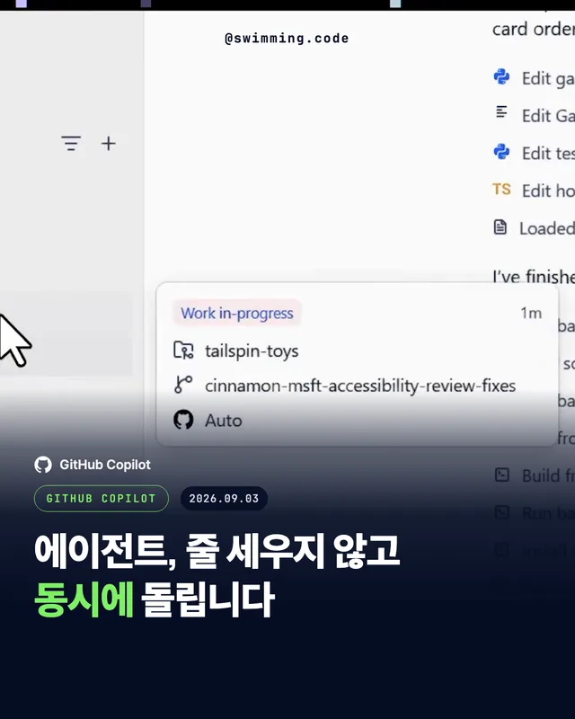
도구·MCPGitHub Copilot 앱 — 여러 AI 에이전트를 줄 세우지 않고 동시에 돌리는 법
데스크톱 앱 한 화면에서 여러 에이전트 세션을 동시에 돌립니다. 세션마다 작업 공간이 따로 생겨 서로 충돌하지 않는 구조를 GitHub 공식 블로그 기준으로 정리했습니다.
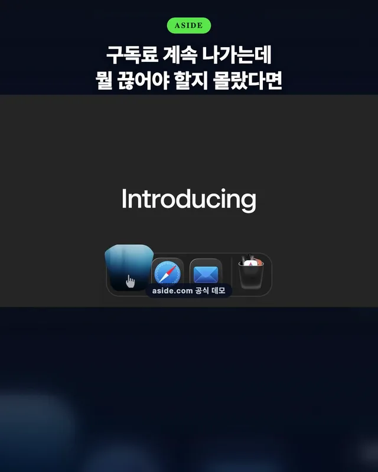
도구·MCPAside — 웹사이트·계정을 넘나들며 일을 대신 처리하는 AI 브라우저
로그인이 필요한 사이트와 여러 계정을 오가는 일을 AI에게 맡기는 브라우저입니다. 결제·게시·메시지 전송처럼 되돌릴 수 없는 동작은 항상 사람 확인을 거치는 방식까지 담았습니다.
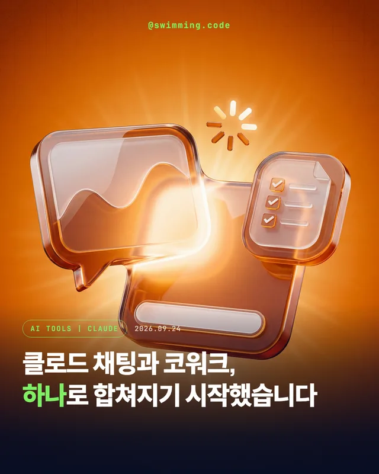
도구·MCPClaude 채팅·코워크가 하나로 — 한 대화에서 문서·슬라이드까지, 반복 업무는 예약으로
모드를 고르지 않고 부탁만 하면 클로드가 알아서 답하거나 작업해 문서·슬라이드로 돌려줍니다. 2026년 9월 16일 변경 내용을 공식 도움말 기준으로 정리했습니다.
도구·MCPCodenotch — 맥 화면 가장자리에서 실시간으로 보는 Claude Code 사용량
화면 가장자리의 작은 탭으로 Claude Code를 포함한 코딩 도구 15종의 사용량 한도를 실시간으로 보여주는 무료 오픈소스 앱입니다. 설치와 보는 법을 정리했습니다.
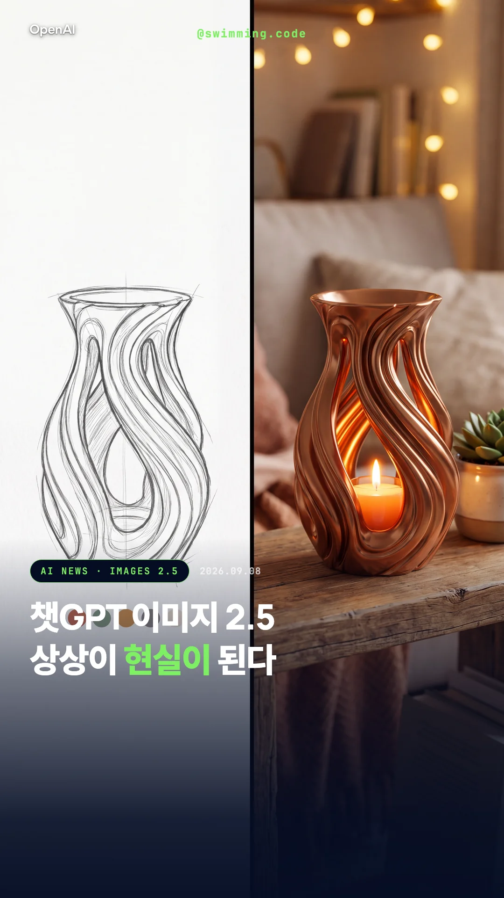
트렌드ChatGPT 이미지 2.5 — 더 정교해진 이미지 생성 모델
원하는 부분만 정확히 편집하고 나머지는 그대로 유지합니다. 생성 속도는 최대 50% 빨라졌습니다.
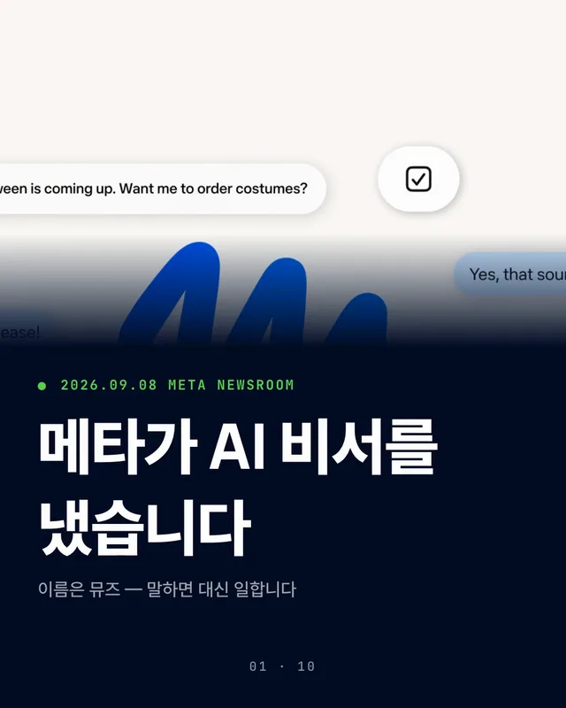
트렌드메타 뮤즈 — 질문에 답하는 게 아니라 일을 대신 하는 AI 에이전트
목표를 말하면 창을 닫아도 백그라운드에서 작업을 이어 가는 메타의 개인용 에이전트입니다. 결제·이메일처럼 되돌리기 어려운 일은 먼저 확인받는 방식까지 공식 발표 기준으로 담았습니다.
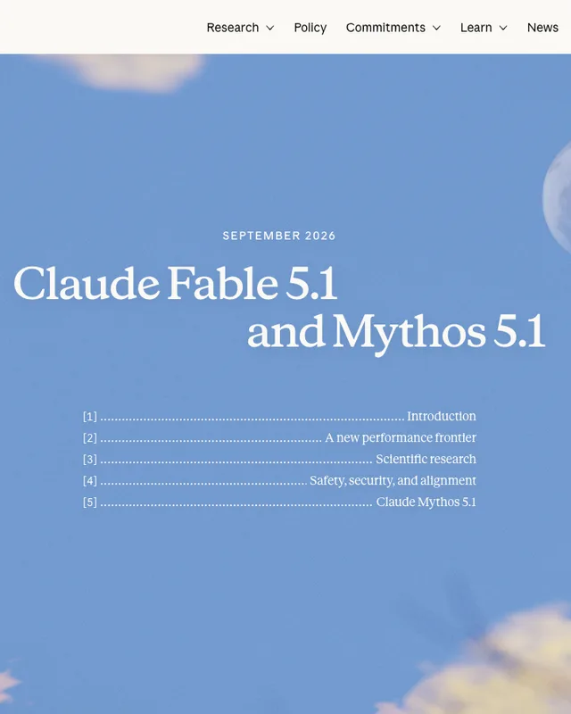
트렌드클로드 페이블 5.1 — 코딩·지식노동 신모델 공식 출시
앤트로픽이 2026년 9월 1일 공개한 코딩·지식노동용 신모델입니다. 함께 나온 미토스 5.1과의 차이, 이전 모델 대비 달라진 점을 공식 발표 기준으로 정리했습니다.
트렌드GPT-6 Astra — 키보드도 마우스도 필요 없는 컴퓨터 사용 AI
말이나 글로 지시하면 AI가 화면을 직접 클릭·입력해 일을 끝내는 오픈AI의 컴퓨터 사용 모델입니다. 공개 내용과 이용 조건을 공식 발표 기준으로 정리했습니다.
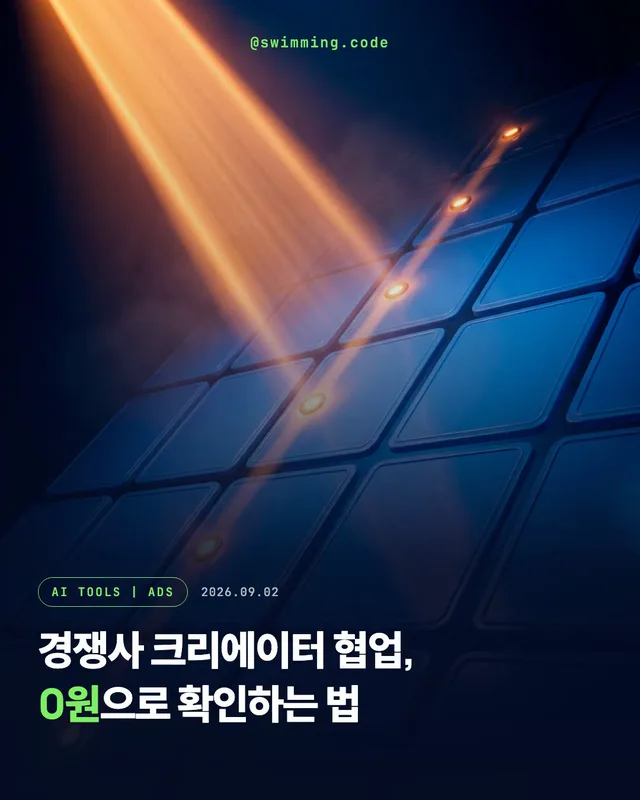
도구·MCP경쟁사 광고 크리에이터 협업 확인하는 법 — 메타 광고 라이브러리 + Higgsfield MCP
메타 광고 라이브러리의 「브랜디드 콘텐츠」 탭으로 어떤 브랜드가 어떤 크리에이터와 협업했는지 확인하고, 커넥터 두 개로 리포트와 광고 소재까지 이어 가는 방법입니다.
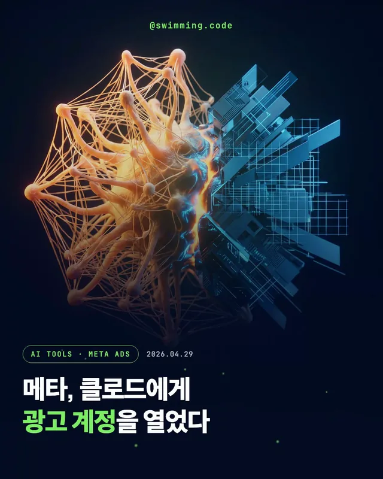
도구·MCPMeta 광고 AI 커넥터 — 클로드로 광고 관리
클로드·ChatGPT가 광고 계정에 직접 붙어 성과 조회와 캠페인 관리를 합니다. 새 캠페인은 일시중지 상태로 열립니다.
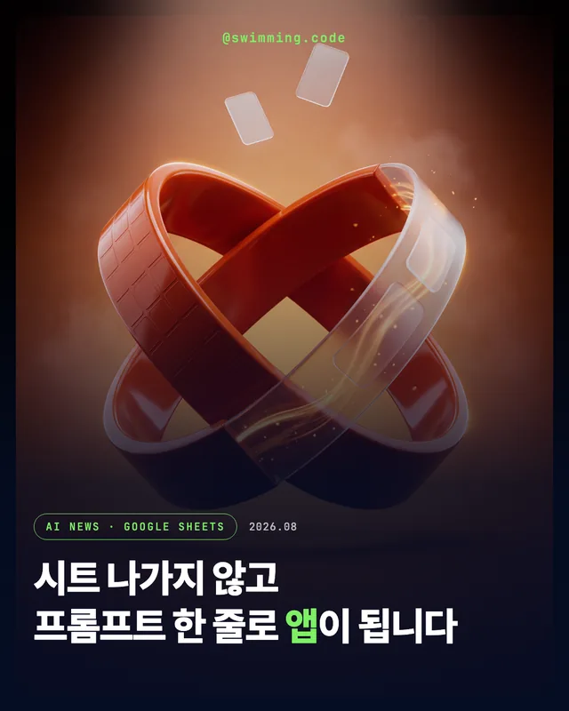
도구·MCP구글시트 Sheets canvas — 시트를 미니앱으로
프롬프트 한 줄로 시트 위에 칸반보드·대시보드가 생깁니다. 화면에서 카드를 옮기면 원본 시트가 같이 바뀝니다.
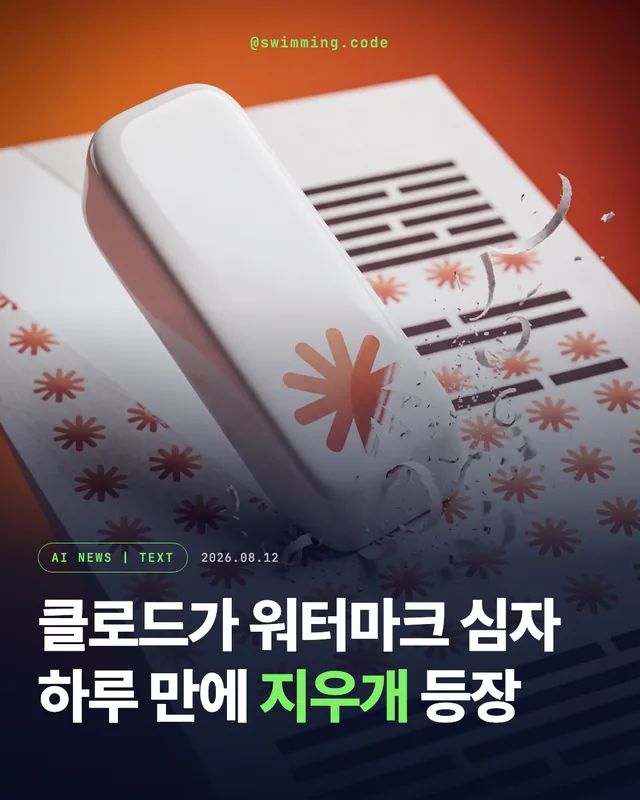
도구·MCP클로드 워터마크 지우개 — watermarks-remover
8월 11일부터 클로드 글에 통계 워터마크가 들어갑니다. 숨은 문자는 지워지지만 통계 흔적은 완전히 지워지지 않습니다.
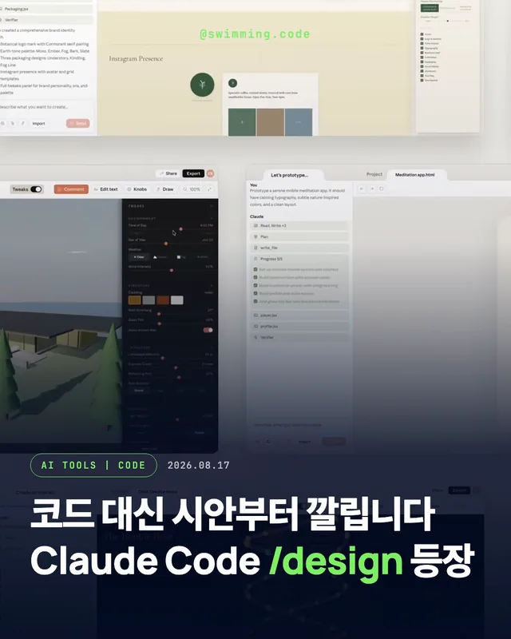
도구·MCPClaude Code /design 시작 가이드
코드보다 시안이 먼저 나오는 새 작업 방식. 화면을 말로 설명하면 편집 가능한 시안이 깔립니다.
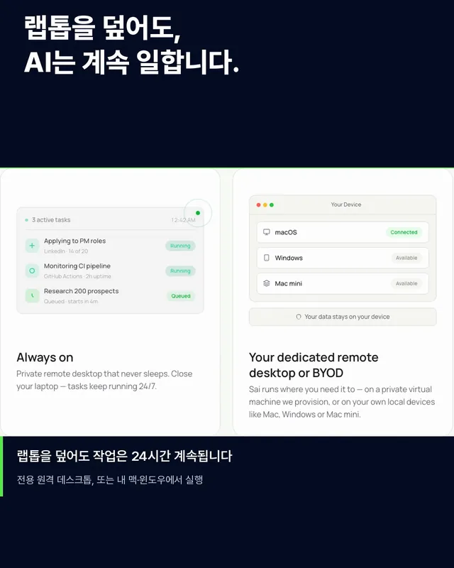
도구·MCPSai — 사람처럼 컴퓨터를 다루는 AI 코워커
연결 통로(API)가 없어 자동화가 안 되던 화면도 직접 클릭해 처리합니다. 시작 가이드.
프롬프트캐릭터 얼굴 안 바뀌게 하는 프롬프트
AI 영상에서 컷마다 얼굴이 달라지는 문제. Higgsfield 참조 이미지로 잡는 법.
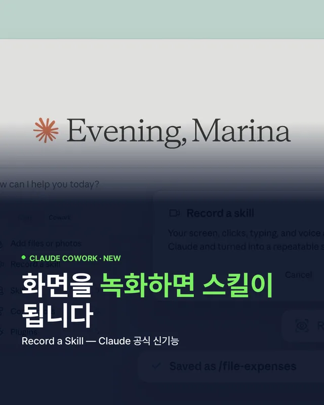
도구·MCPClaude Cowork “Record a Skill”
화면 녹화만으로 반복 업무를 스킬로 만드는 법. 권한 설정부터 3단계로.
도구·MCP엔비디아 build.nvidia.com 카탈로그
무료 AI 모델 139개 + 블루프린트 42개. 가입하면 체험 크레딧도 줍니다.
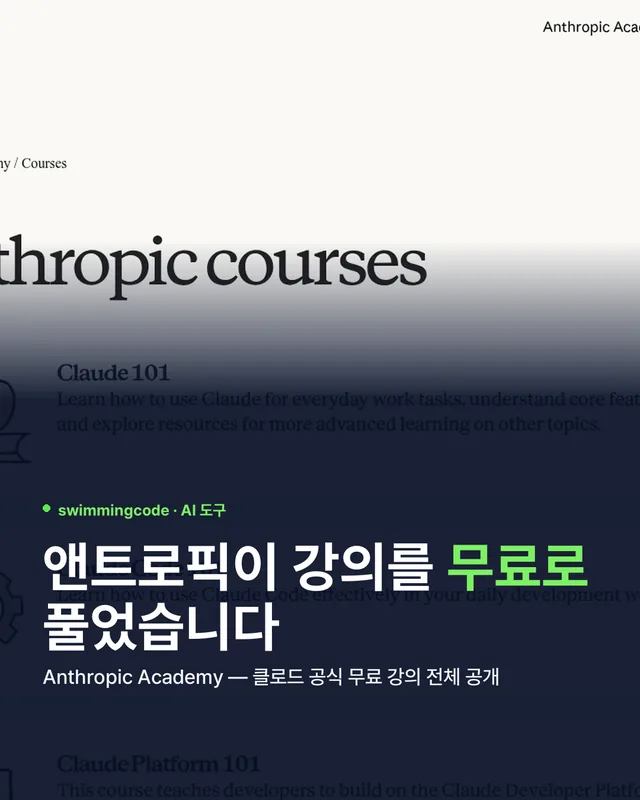
도구·MCPAnthropic Academy — 클로드 공식 무료 강의
20개가 넘는 공식 강의. 어디서부터 봐야 하는지 순서까지.
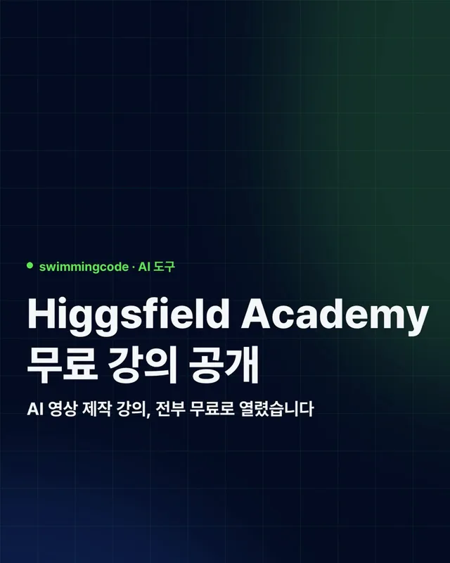
도구·MCPHiggsfield Academy — 무료 강의 2개
Cinema Studio 입문 12강, AI 필름메이킹 22강. 무료 생성 크레딧까지.
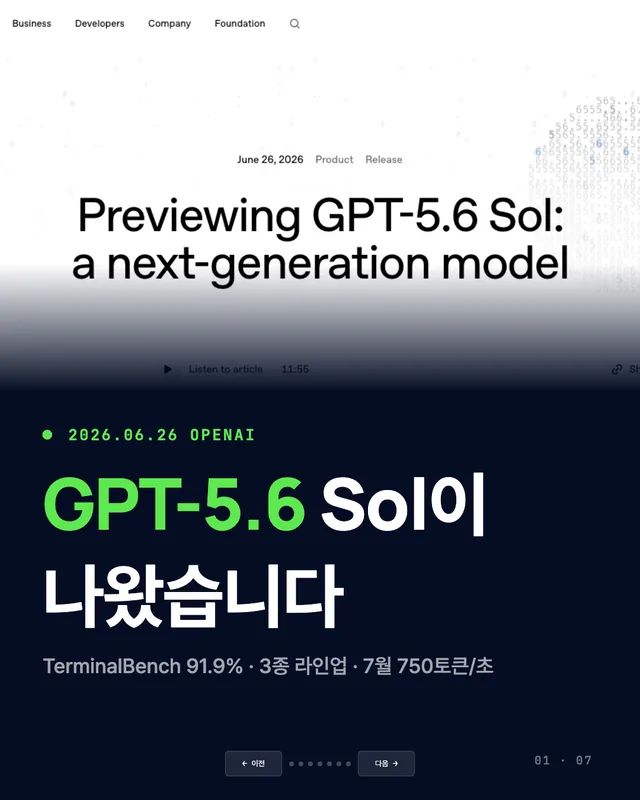
트렌드GPT-5.6 Sol — OpenAI 차세대 모델
무엇이 달라졌는지, 우리 작업에 무슨 의미인지 정리했습니다.
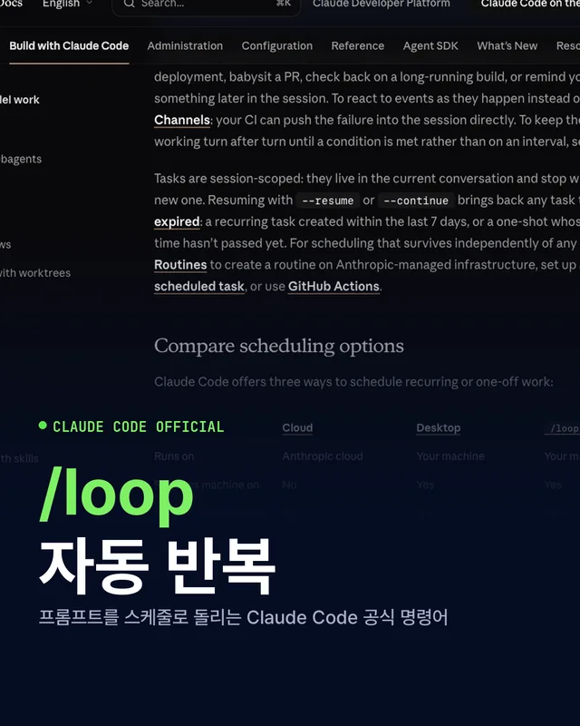
프롬프트루프 엔지니어링 — 업무를 루프로 돌리기
Claude Code에 반복 작업을 맡기는 구조. 한 번 시키고 끝내지 않는 법.
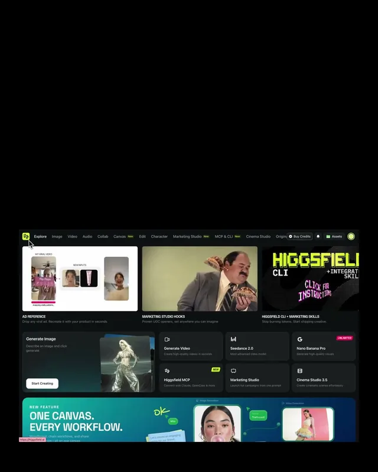
도구·MCPHiggsfield MCP 연결하기 — 터미널 3줄
클로드에 영상 생성 도구를 붙입니다. 30개 모델에 바로 접근됩니다.
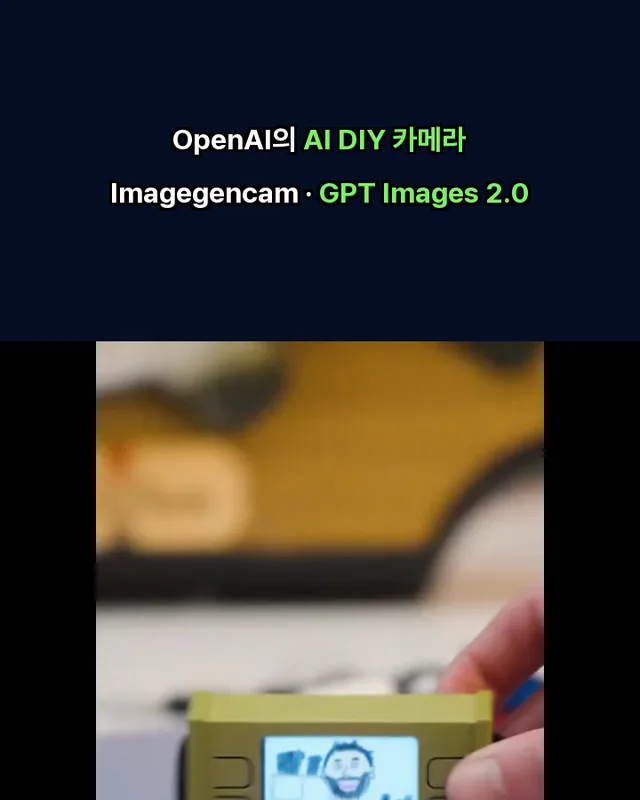
도구·MCPImageGenCam — 오픈소스 AI 카메라
Codex로 직접 조립하는 AI 카메라. 부품부터 코드까지.
프롬프트AI 결과물 De-Slop — 품질 올리는 패턴
AI 티 나는 문장을 걷어내는 프롬프트 패턴. 복붙해서 씁니다.
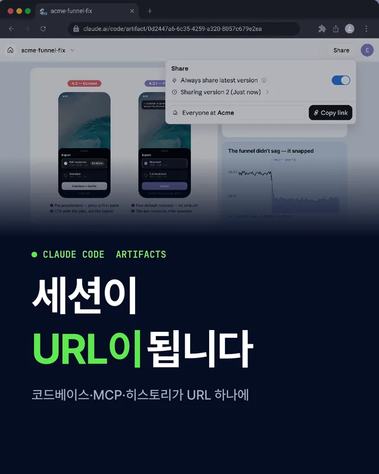
도구·MCPClaude Code Artifacts — 세션을 웹페이지로
작업한 세션이 클릭 가능한 라이브 웹페이지가 됩니다. 배포도 서버도 없이.
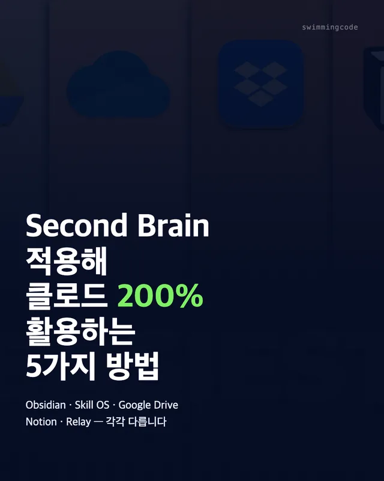
세팅Second Brain 앱을 Claude에 연결하는 5가지
노션·옵시디언 등 내 기록을 클로드가 읽게 만드는 방법 5가지 비교.
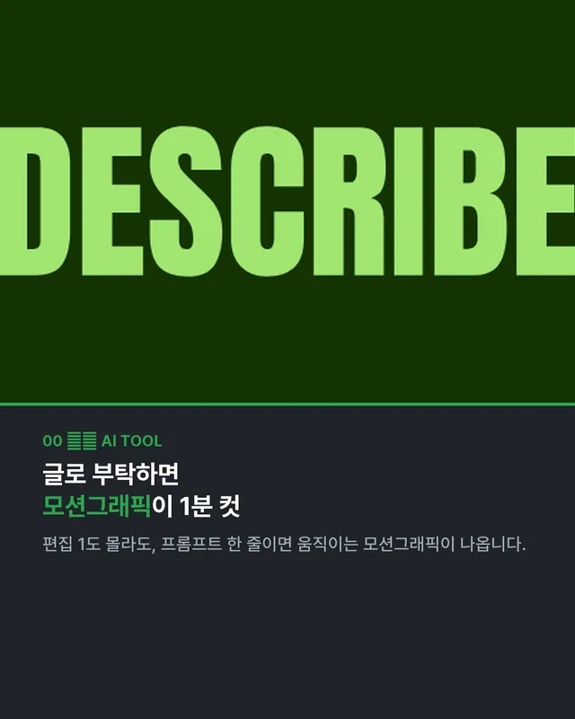
도구·MCP글로 설명하면 모션그래픽이 만들어집니다
텍스트로 애니메이션을 만드는 도구. 직접 돌려본 결과와 한계까지.